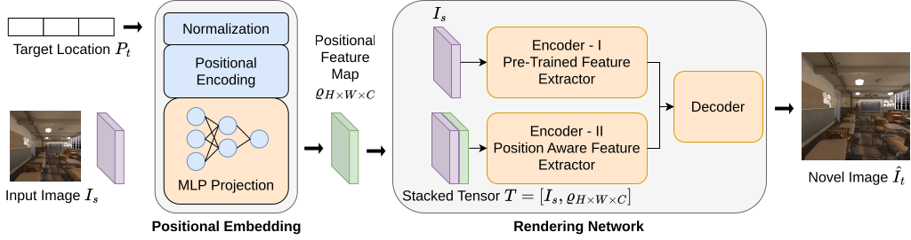
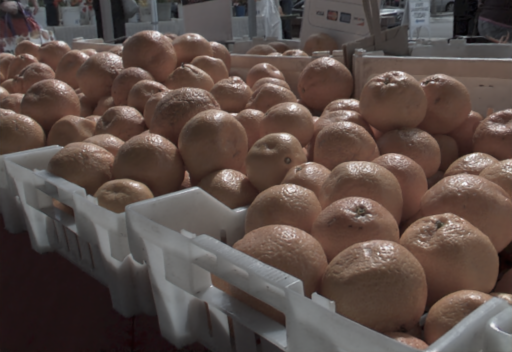
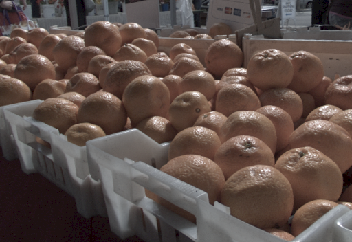
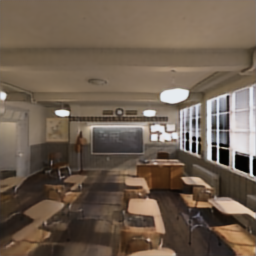
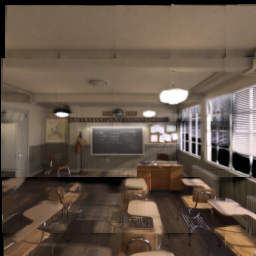
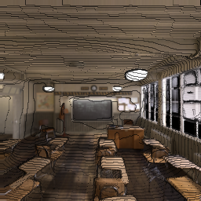
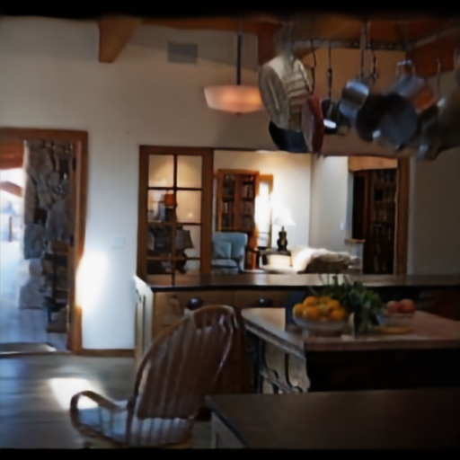
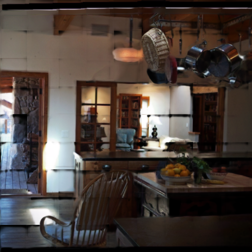
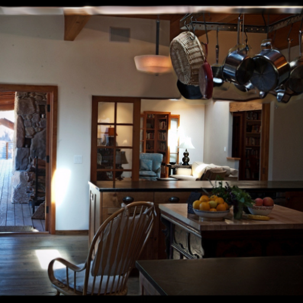
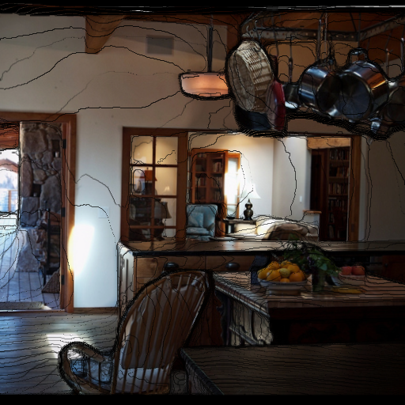

Light Field Reconstruction Example 1
Flowers Dataset
We present a lightweight, position-aware network designed for real-time novel view synthesis from a single input image. Unlike existing MPI or Image-Based methods which utlizie an explicit warping operator, we directly query the final views from the network itself. Our network inference is real-time making it suitable for fine-tuning on domain specific applications for live feeds.

Flowers Dataset
Stanford Dataset


The visual comparison against TMPI, AdaPI, SinMPI on Blender Dataset.



The visual comparison against SinMPI, TMPI, AdaMPI on Blender Dataset.




The below example shows the NVS results when using different positional embedding methods.
There's a lot of excellent work that was introduced around the same time as ours.
NViST: In the Wild New View Synthesis from a Single Image with Transformers introduces an idea similar to as our embedding scheme.
We compare the FPS rate on different resolutions against other methods when rendering end-to-end.
@article{GOND2026117699,
title = {Real-time position-aware view synthesis from single-view input},
journal = {Signal Processing: Image Communication},
volume = {149},
pages = {117699},
year = {2026},
issn = {0923-5965},
doi = {https://doi.org/10.1016/j.image.2026.117699},
url = {https://www.sciencedirect.com/science/article/pii/S0923596526002225},
author = {Manu Gond and Emin Zerman and Sebastian Knorr and Mårten Sjöström},
keywords = {View synthesis, Deep learning, Immersive imaging, Rendering, Position embedding, Light field}}